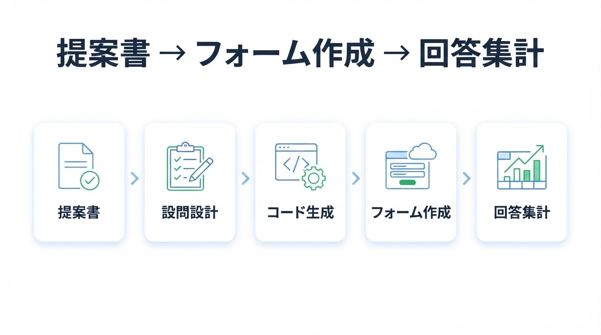
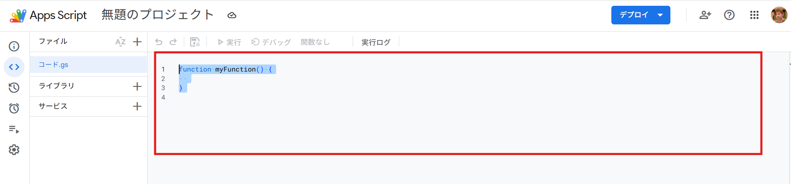

Hands-on 02
この章でやること
この章では、Google Apps Scriptを使って、 生成AI研修 参加申込・活用度診断フォームを自動生成します。
第1章では、生成AI研修の必要性を調査し、会社向けの提案書を作成しました。 第2章では、その提案書の内容を活用しながら、 研修への参加申込と、参加者の生成AI活用状況を確認できるフォームを作成します。
具体的には、氏名、所属部署、希望する研修実施日、生成AIの理解度、 業務で活用したい内容、不安に感じていること、学びたい内容などを入力してもらうフォームを作ります。

Connection
第1章とのつながり
第1章では、生成AI研修の必要性を調査し、 会社に研修実施を提案するための資料を作成しました。
第2章では、その提案書をそのまま使って、 研修の参加申込と、参加者の理解度・不安・学びたい内容を確認するフォームを作成します。
第1章で作ったもの
- 生成AI研修の必要性に関する調査結果
- 会社向けの生成AI研修実施提案書
- 研修の目的・対象者・内容案・期待効果
この章で作るもの
- 生成AI研修の参加申込フォーム
- 生成AI活用度の事前診断フォーム
- 希望研修日の集計に使える回答データ
- 第4章のCSV集計アプリで使える回答データ
Use Output
第1章の提案書を使う
この章では、第1章で作成した提案書を全文コピーして使います。
受講者が提案書の中から研修目的や対象者を一つずつ抜き出す必要はありません。 提案書を全文貼り付け、AIに必要な情報を読み取ってもらいます。
Theme
作成するフォーム
今回作成するのは、 生成AI研修 参加申込・活用度診断フォームです。
研修への参加申込を受け付けるだけでなく、 参加者が生成AIをどの程度知っているか、 どのような業務で活用したいか、 どのような内容を学びたいかもあわせて確認します。
完成イメージを確認する
今回作成するフォームの完成イメージとして、以下のサンプルGoogleフォームを確認できます。 自分でフォームを作成する前に、どのような設問構成になるのか確認しておきましょう。
Form Items
フォームに入れる項目
フォームには、研修申込に必要な項目と、 研修内容を調整するための事前ヒアリング項目を入れます。
申込に必要な項目
- 氏名
- 所属部署
- 現在の主な職種
- 所属部署または職種で「その他」を選んだ場合の補足
- 希望する研修実施日
事前ヒアリング項目
- 生成AIについて、現在どの程度知っているか
- 使ったことがある生成AIサービス
- 生成AIを活用できそうな業務
- 生成AIを使ううえで不安に感じること
- 現在の業務での生成AI活用状況
- 研修で学びたい内容
- 特に扱ってほしい業務やテーマ
- その他の意見・要望
希望する研修実施日の設問
希望する研修実施日は、3つの日程から1つを選んでもらう形にします。
Googleフォームでは「選択式」、Apps Scriptでは
MultipleChoiceItem
を使います。
- 第1回：2026年○月○日（○） 13:30〜16:30
- 第2回：2026年○月○日（○） 13:30〜16:30
- 第3回：2026年○月○日（○） 13:30〜16:30
実際の研修日が決まっている場合は、この3つの日程を実日程に差し替えてください。
Preparation
事前準備
フォームを自動生成する前に、以下を準備します。
準備 1
第1章の提案書
第1章で作成した提案書を開きます。 この後のプロンプトの最後に、提案書本文を全文貼り付けます。
準備 2
Googleアカウント
GoogleフォームとGoogleスプレッドシートを作成するため、 Googleアカウントにログインしておきます。
準備 3
AIチャット画面
フォーム作成用のプロンプトをAIに作らせるため、 AIチャット画面を開いておきます。
準備 4
Google Apps Script
AIが作成したApps Scriptコードを貼り付けて実行するため、 Google Apps Scriptを使います。
Prompt
フォーム作成用プロンプトをAIに作らせる
ここでは、いきなりApps Scriptコードを書かせるのではなく、 まずAIに Googleフォーム作成用のプロンプト を作らせます。
第1章の提案書を全文貼り付けることで、 AIが研修の目的や対象者を読み取り、 今回の研修に合ったフォーム作成用プロンプトを作成します。
あなたは、Googleフォームを使った研修申込フォーム作成を支援するアシスタントです。
これから、Google Apps Scriptで
「生成AI研修 参加申込・活用度診断フォーム」を自動作成したいです。
以下に、第1章で作成した「生成AI研修会 実施提案書」の本文を貼り付けます。
この提案書の内容を読み取ったうえで、
Google Apps Scriptにコード作成を依頼するためのプロンプトを作成してください。
この段階では、Apps Scriptコードはまだ作成しないでください。
Google Apps Scriptでフォームを作成するための、完成度の高いプロンプトだけを作成してください。
作成するフォームは、単なるアンケートではなく、
「生成AI研修 参加申込・活用度診断フォーム」としてください。
フォームでは、研修への参加申込を受け付けると同時に、
参加者の生成AIに関する理解度、利用状況、学びたい内容を確認できるようにしてください。
必ず以下の項目を入れてください。
1. 氏名
- 記述式
- 必須
2. 所属部署を選択してください
- プルダウンまたはラジオボタン
- 必須
- 選択肢例：
総務部
営業部
製造部
経理部
人事部
企画部
情報システム部
カスタマーサポート
その他
3. 現在の主な職種を選択してください
- プルダウンまたはラジオボタン
- 必須
- 選択肢例：
事務職
営業職
技術職
企画職
現場管理
管理職
その他
4. 所属部署または職種で「その他」を選択した場合は、差し支えない範囲で補足してください
- 記述式
- 任意
5. 希望する研修実施日を選択してください
- ラジオボタン、Googleフォームでは選択式
- 必須
- 選択肢は以下の3つ：
第1回：2026年○月○日（○） 13:30〜16:30
第2回：2026年○月○日（○） 13:30〜16:30
第3回：2026年○月○日（○） 13:30〜16:30
6. 生成AIについて、現在どの程度知っていますか
- ラジオボタン
- 必須
- 選択肢例：
名前は聞いたことがある
基本的な内容は知っている
業務での活用イメージがある
詳しく知っている
7. これまでに使ったことがある生成AIサービスを選択してください
- チェックボックス
- 必須
- 選択肢例：
ChatGPT
Gemini
Claude
Microsoft Copilot
使ったことはない
その他
8. あなたの業務で、生成AIを活用できそうだと思うものを選択してください
- チェックボックス
- 必須
- 選択肢例：
メール作成
文書作成
提案書作成
企画書作成
情報収集
議事録要約
マニュアル作成
問い合わせ対応
社内FAQ作成
アンケート作成
アンケート集計
コード作成
業務自動化
その他
9. 生成AIを使ううえで、不安に感じることを選択してください
- チェックボックス
- 必須
- 選択肢例：
情報漏えい
個人情報
回答の正確性
著作権
セキュリティ
社内ルールが不明
使い方がわからない
特に不安はない
その他
10. 現在、業務で生成AIをどの程度活用していますか
- ラジオボタン
- 必須
- 選択肢例：
まだ活用していない
個人的に試したことがある
一部の業務で活用している
日常的に活用している
11. 生成AI研修で学びたい内容を選択してください
- チェックボックス
- 必須
- 選択肢例：
ChatGPTの基本操作
プロンプト作成
メール作成
文書作成
資料作成
フォーム作成
業務効率化
業務自動化
アプリ作成
社内ルール
注意点
その他
12. 生成AI研修で特に扱ってほしい業務やテーマがあれば記入してください
- 段落
- 任意
13. その他、生成AIの活用や研修に関して意見・要望があれば記入してください
- 段落
- 任意
以下の条件もプロンプトに含めてください。
- Googleフォームを新規作成する
- フォーム名は「生成AI研修 参加申込・活用度診断フォーム」にする
- 回答先のGoogleスプレッドシートも作成する
- フォームURL、編集URL、回答スプレッドシートURLをログに出力する
- 初心者にもわかるように、コード内にコメントを入れるよう依頼する
- 実在の個人情報や機密情報を入力しない注意書きをフォーム説明文に入れる
- Google Apps Scriptに貼り付けて実行できるコードを作成してもらう前提にする
【第1章で作成した提案書本文】
ここに第1章で作成した提案書を全文貼り付けるUse Prompt
AIが作ったプロンプトを使う
前の手順でAIが作成したプロンプトを確認したら、 そのプロンプトをそのままAIに送信します。
すると、AIがGoogle Apps Script用のコードを作成します。 このコードをGoogle Apps Scriptに貼り付けて実行することで、 Googleフォームと回答用スプレッドシートを自動で作成できます。
AIが作成したプロンプトをコピーする
前の手順でAIが出力した、Google Apps Scriptコード作成用のプロンプトをコピーします。
そのままAIに送信する
コピーしたプロンプトをAIに貼り付けて送信します。 追加で複雑な修正をする必要はありません。
Apps Scriptコードを受け取る
AIが、Googleフォームを作成するためのApps Scriptコードを出力します。 次の手順で、そのコードをGoogle Apps Scriptに貼り付けます。
Google Apps Script
Google Apps Scriptでフォームを作成する
AIが作成したApps Scriptコードを、Google Apps Scriptに貼り付けて実行します。 実行すると、Googleフォームと回答用スプレッドシートが自動で作成されます。
Google Apps Scriptは、Googleフォーム、Googleスプレッドシート、Gmailなどを自動操作できる仕組みです。 今回は、フォーム作成の自動化に使います。

新しいプロジェクトを作成する
新しいプロジェクトを作成し、プロジェクト名を以下のようにします。
生成AI研修申込フォーム作成コードを貼り付ける
AIが作成したApps Scriptコードを、エディタに貼り付けます。 既存のコードがある場合は削除してから貼り付けます。
保存して実行する
コードを保存し、実行ボタンを押します。 初回実行時には、Googleアカウントの権限確認が表示されます。
ログでURLを確認する
実行後、ログに表示されたフォームURL、編集URL、 回答スプレッドシートURLを確認します。
Backup
うまくいかない場合の予備サンプルコード
AIが作成したコードでうまくフォームが作れない場合は、 以下の予備サンプルコードを使って動作を確認できます。
ただし、研修ではまず AIにプロンプトを作らせ、そのプロンプトでコードを作る流れ を優先してください。
function createAiTrainingApplicationForm() {
// フォーム名
const formTitle = '生成AI研修 参加申込・活用度診断フォーム';
// Googleフォームを新規作成
const form = FormApp.create(formTitle);
// フォーム説明文
form.setDescription(
'このフォームは、生成AI研修への参加申込と、参加者の生成AI活用状況を確認するためのフォームです。' +
'\\n研修中の動作確認では、実在の個人情報・顧客情報・社内機密情報を入力しないでください。'
);
// 回答用スプレッドシートを作成してフォームに紐づけ
const spreadsheet = SpreadsheetApp.create('生成AI研修 参加申込・活用度診断フォーム 回答一覧');
form.setDestination(FormApp.DestinationType.SPREADSHEET, spreadsheet.getId());
// 1. 氏名
form.addTextItem()
.setTitle('氏名')
.setHelpText('研修中のテストでは、実名ではなく「山田 太郎」などのサンプル名を入力してください。')
.setRequired(true);
// 2. 所属部署
form.addListItem()
.setTitle('所属部署を選択してください')
.setChoiceValues([
'総務部',
'営業部',
'製造部',
'経理部',
'人事部',
'企画部',
'情報システム部',
'カスタマーサポート',
'その他'
])
.setRequired(true);
// 3. 職種
form.addListItem()
.setTitle('現在の主な職種を選択してください')
.setChoiceValues([
'事務職',
'営業職',
'技術職',
'企画職',
'現場管理',
'管理職',
'その他'
])
.setRequired(true);
// 4. その他補足
form.addTextItem()
.setTitle('所属部署または職種で「その他」を選択した場合は、差し支えない範囲で補足してください')
.setRequired(false);
// 5. 希望する研修実施日
form.addMultipleChoiceItem()
.setTitle('希望する研修実施日を選択してください')
.setChoiceValues([
'第1回：2026年○月○日（○） 13:30〜16:30',
'第2回：2026年○月○日（○） 13:30〜16:30',
'第3回：2026年○月○日（○） 13:30〜16:30'
])
.setRequired(true);
// 6. 生成AIの理解度
form.addMultipleChoiceItem()
.setTitle('生成AIについて、現在どの程度知っていますか')
.setChoiceValues([
'名前は聞いたことがある',
'基本的な内容は知っている',
'業務での活用イメージがある',
'詳しく知っている'
])
.setRequired(true);
// 7. 使ったことがある生成AIサービス
form.addCheckboxItem()
.setTitle('これまでに使ったことがある生成AIサービスを選択してください')
.setChoiceValues([
'ChatGPT',
'Gemini',
'Claude',
'Microsoft Copilot',
'使ったことはない',
'その他'
])
.setRequired(true);
// 8. 活用できそうな業務
form.addCheckboxItem()
.setTitle('あなたの業務で、生成AIを活用できそうだと思うものを選択してください')
.setChoiceValues([
'メール作成',
'文書作成',
'提案書作成',
'企画書作成',
'情報収集',
'議事録要約',
'マニュアル作成',
'問い合わせ対応',
'社内FAQ作成',
'アンケート作成',
'アンケート集計',
'コード作成',
'業務自動化',
'その他'
])
.setRequired(true);
// 9. 不安に感じること
form.addCheckboxItem()
.setTitle('生成AIを使ううえで、不安に感じることを選択してください')
.setChoiceValues([
'情報漏えい',
'個人情報',
'回答の正確性',
'著作権',
'セキュリティ',
'社内ルールが不明',
'使い方がわからない',
'特に不安はない',
'その他'
])
.setRequired(true);
// 10. 現在の業務活用状況
form.addMultipleChoiceItem()
.setTitle('現在、業務で生成AIをどの程度活用していますか')
.setChoiceValues([
'まだ活用していない',
'個人的に試したことがある',
'一部の業務で活用している',
'日常的に活用している'
])
.setRequired(true);
// 11. 学びたい内容
form.addCheckboxItem()
.setTitle('生成AI研修で学びたい内容を選択してください')
.setChoiceValues([
'ChatGPTの基本操作',
'プロンプト作成',
'メール作成',
'文書作成',
'資料作成',
'フォーム作成',
'業務効率化',
'業務自動化',
'アプリ作成',
'社内ルール',
'注意点',
'その他'
])
.setRequired(true);
// 12. 扱ってほしい業務やテーマ
form.addParagraphTextItem()
.setTitle('生成AI研修で特に扱ってほしい業務やテーマがあれば記入してください')
.setRequired(false);
// 13. 意見・要望
form.addParagraphTextItem()
.setTitle('その他、生成AIの活用や研修に関して意見・要望があれば記入してください')
.setRequired(false);
// 送信後メッセージ
form.setConfirmationMessage(
'お申し込みありがとうございます。入力内容を確認し、研修運営側で参考にします。'
);
// 回答受付を有効化
form.setAcceptingResponses(true);
// URLをログに出力
Logger.log('フォーム回答用URL: ' + form.getPublishedUrl());
Logger.log('フォーム編集用URL: ' + form.getEditUrl());
Logger.log('回答スプレッドシートURL: ' + spreadsheet.getUrl());
}Checklist
作業チェックリスト
作業が完了したら、以下を確認しましょう。
Review
確認ポイント
フォーム内容の確認
- フォーム名が「生成AI研修 参加申込・活用度診断フォーム」になっている
- 氏名の入力欄がある
- 所属部署の選択欄がある
- 希望する研修実施日の選択欄がある
- 生成AIの理解度や活用状況を確認する項目がある
- 学びたい内容や不安に感じることを確認する項目がある
実務利用の確認
- 実際の研修日程に差し替えられている
- 回答用URLを参加者に案内できる
- 編集用URLを参加者に送らない
- 回答スプレッドシートの共有範囲を確認している
- 個人情報の取り扱いを確認している
- 第3章の告知ページからリンクできる
Troubleshooting
困ったときは
Google Apps Scriptの実行時に権限確認が出ます
初回実行時は、Googleフォームやスプレッドシートを作成するための権限確認が表示されます。 自分で作成したスクリプトであることを確認したうえで、許可してください。
「このアプリは確認されていません」と表示されます
自分で作成したApps Scriptを初めて実行すると表示されることがあります。 詳細表示から、自分のスクリプトであることを確認して進めます。 会社アカウントでは制限される場合があります。
フォームURLがどこにあるかわかりません
Apps Scriptの実行ログを確認してください。
コード内で
Logger.log
により、フォーム回答用URL、編集用URL、回答スプレッドシートURLを出力しています。
フォームはできたが、スプレッドシートが見つかりません
実行ログに回答スプレッドシートURLが表示されます。 また、Google Drive上で 「生成AI研修 参加申込・活用度診断フォーム 回答一覧」 という名前で検索してください。
AIが作ったコードでエラーが出ます
エラーメッセージをコピーしてAIに貼り付け、 「このエラーを修正して、コード全文を出してください」と依頼します。 それでもうまくいかない場合は、予備サンプルコードを使ってください。
研修実施日を変更したいです
Apps Scriptコード内の 「第1回」「第2回」「第3回」の選択肢を、実際の日程に変更してください。 すでにフォームを作成済みの場合は、Googleフォームの編集画面から直接修正しても構いません。
氏名を取るのが不安です
実務で氏名を取得する場合は、利用目的、共有範囲、保管方法を確認してください。 研修中のテストでは、実名ではなくサンプル名を使って動作確認してください。
会社アカウントでApps Scriptが使えません
会社のGoogle Workspace設定でApps Scriptが制限されている可能性があります。 その場合は、管理者に確認するか、講師の画面で流れを確認してください。